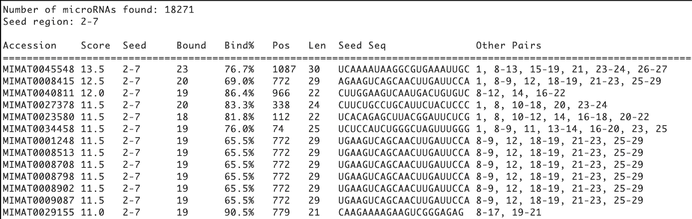

Dynamite Mode - Database Scanning
Overview
Dynamite Mode scans your target mRNA against a database of ~48,860 known microRNAs to identify ALL possible microRNA regulators in a single analysis.
Perfect for: - ✅ Discovery: Find unknown microRNA regulators - ✅ Exploration: Screen all possibilities at once - ✅ Research: Identify potential regulatory networks - ✅ Ranking: See which microRNAs are strongest binders
How Dynamite Mode Works
The Algorithm
Input: mRNA sequence + Seed region
For each of the ~48,860 microRNAs in database:
1. Extract seed region (positions 2-7)
2. Reverse complement it
3. Search entire mRNA for matches
4. If found:
- Calculate full duplex alignment
- Score all Watson-Crick pairs
- Count wobble pairs
- Compute binding strength %
5. Store result with ranking score
Output: Sorted table (best to weakest binders)
Processing Timeline
Start scanning...
10% — Estimated time remaining ~ 8.5 s
20% — Estimated time remaining ~ 7.2 s
...
100% — COMPLETE!
Results: 47 microRNAs can bind your mRNA
Step-by-Step Analysis
1️⃣ Input: Target mRNA
Choose how to provide the mRNA:
Option A: GenBank ID
Select: ⊙ GenBank ID
Enter: NM_008539
Auto-extracts: 3'UTR region
Best for: Known genes with published annotations
Option B: GenBank File
Select: ⊙ File
Choose: [Browse] → gene.gb
Auto-extracts: 3'UTR from CDS annotation
Best for: Local data, custom annotations
Option C: FASTA File
Select: ⊙ File
Choose: [Browse] → sequence.fa
Note: Uses entire sequence (you manage content)
Best for: Already-prepared 3'UTR sequences
Option D: Direct Sequence
Select: ⊙ Sequence
Paste: AUGAAACGCGAGCGACGAGC...
Best for: Quick screening of short regions
2️⃣ Input: Seed Region
Specify the seed region criteria:
Seed: 2-7
Choose from: - 2-7: Standard (most commonly used) - 2-8: More stringent (higher specificity) - 1-8: Strictest (lowest false positives) - 2-6: Permissive (more candidates)
See Matching Mode for detailed explanation.
3️⃣ Run Full Scan
Click [ Parse ] button
What Happens: 1. Validates mRNA input 2. Opens database (~48,860 microRNAs) 3. Tests each microRNA against your mRNA 4. Progress window shows real-time status 5. Computes results in background (non-blocking UI) 6. Displays sorted results when complete
Typical Duration: 5-10 seconds
4️⃣ Monitor Progress
A progress window appears:

What it shows: - Percentage of database scanned - Visual progress bar - Estimated time to completion - Updated in real-time
During scanning: - ✅ Main window stays responsive - ✅ You can view previous results - ✅ Cannot start new scan until complete
Understanding Results
Result Table Format

Column Explanations
| Column | Meaning | Example |
|---|---|---|
| Accession | microRNA ID (miRBase) | MIMAT0000062 |
| Score | Total pairing strength | 15.5 (higher = better) |
| Seed | Positions used for search | 2-7 (as specified) |
| Bound | Total nucleotides paired | 8 |
| Bind% | Percentage of microRNA that pairs | 80% |
| Position | Where binding starts in mRNA | 450 |
| Length | microRNA sequence length | 22 nucleotides |
| microRNA Seq | Actual seed sequence | CUGGGCAACAUAGCGAGACCCC |
| Other Pairs | Positions with pairs outside seed | 8-12,14-16 |
Result Ranking
Results are automatically sorted by:
- Primary: Score (highest first) = strongest binders
- Secondary: Binding % (highest first) = most coverage
What this means: - ✅ Top results are most likely genuine binders - ✅ Each result represents a possible regulator - ✅ You can quickly identify top candidates
What High Results Mean
Multiple Top Binders
Results: 47 microRNAs might3 bind your mRNA
Top 10 shown above...
Implication: Important for gene expression control
Single Strong Binder
Results: 3 microRNAs can bind your mRNA
Only 1 with good score...
Implication: Primary regulatory mechanism identified
No Results
No microRNA binding sites found with these parameters
Troubleshooting: Try different seed (2-8, 2-6)
Exporting Results
Click 💾 button in top-right corner
What gets saved: - Complete results table - All statistics - Input parameters - Analysis timestamp
Format: Plain text file (.txt)
Default name: dynamite_results.txt
Use: Archive, sharing, further analysis
Understanding the Biology
Why Multiple Binders?
Many genes are regulated by multiple microRNAs: - Diversity: Different cellular conditions - Redundancy: Multiple regulatory pathways - Specificity: Different targeting combinations - Fine-tuning: Gradual expression adjustment
What Makes a Good Binder?
- Seed perfect match (positions 2-7)
- Additional pairing (strengthens binding)
- Energetically favorable (stable duplex)
- In 3'UTR region (accessible location)
Seed Region Importance
- Seed (2-7): MUST match exactly
- Position 1 & 8+: Extra pairing, bonus stability
- Perfect alignment: Not typically required
- Wobble pairs: Acceptable, weaken binding slightly
Advanced Usage
Comparing Different Seed Regions
Run analysis 3 times: 1. Seed 2-7 (standard) 2. Seed 2-8 (stringent) 3. Seed 2-6 (permissive)
Compare results: - 2-7: Balanced hit rate - 2-8: Fewer results, higher confidence - 2-6: More results, include marginal binders
Finding Specific microRNAs
Results are sorted by score. To find a specific microRNA: 1. Run Dynamite scan 2. Export results 3. Search exported file for microRNA name/ID 4. Note its rank and score
Focusing on 3'UTR Analysis
Best practice: 1. Use GenBank ID (auto-extracts 3'UTR) 2. Or provide GenBank file 3. Ensures biological relevance 4. Avoid false positives in coding region
Tips & Tricks
🎯 Optimize Your Analysis
- Start with 2-7 seed - most balanced
- Review top 5 results - usually most relevant
- Check positions - biological plausibility
- Use GenBank IDs - automatic 3'UTR extraction
⚡ Speed Up Scanning
- Pre-filter sequences - shorter = faster
- Use 2-8 seed - slightly fewer matches = faster
- Local files - faster than downloading IDs
🔍 Interpret Thoroughly
- Top 3-5 results - most trustworthy
- Position analysis - check if in 3'UTR
- Known interactions - validate against literature
- Binding strength - score correlates with strength
Common Patterns
Pattern 1: Let-7 Family Dominance
Top results include multiple let-7 family members
Indicates: Strong conservation, common target
Pattern 2: Mixed Families
Results from diverse microRNA families
Indicates: Complex regulation, developmental importance
Pattern 3: Single Clear Winner
One microRNA far above others
Indicates: Specific primary regulator
Troubleshooting
Q: Why is analysis slow?
A: Scanning 48,860 microRNAs takes time. Typical: 1-5 minutes. Be patient!
Q: Can I get results in different order?
A: Results are always sorted by score. Export to .txt to manipulate manually.
Q: What if I get too many results?
A: Try seed 2-8 (more stringent). Or manually filter high-score results.
Q: Can I search subset of microRNAs?
A: Currently scans full database. Use Matching mode for specific microRNAs.